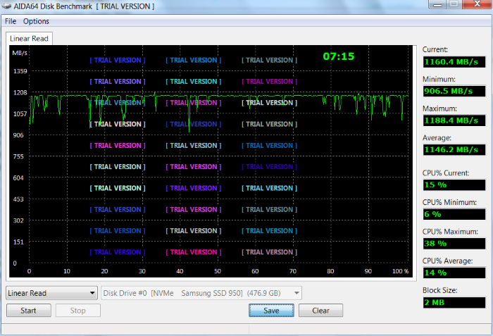

Samsung 950 PRO NVMe M.2 512 GB SSD
Model: MZ-VKV512
Intro
This document contains notes taken at benchmarking read/write speeds of Samsung 950 PRO NVMe M.2 512 GB SSD (MZ-VKV512) over PCIe 2.0, and a comparison of 3 different types of disk drives:
-
M.2 SSD
-
SATA SSD
-
SATA HDD
Samsung 950 PRO NVMe M.2 SSD has the PCIe 3.0 x4 interface over M.2 slot, but we were inrested to measure speeds of the device attached to an old PCIe 2.0 interface.
Tested equipment
Testing objectives
-
find out if the Samsung SSD is backwards compatible with the PCIe 2.0 interface
-
find out if the Samsung SSD can be used as a bootable media on old BIOS-based motherboards with no GPT nor UEFI support
-
benchmark the read/write speeds of the Samsung SSD on PCIe 2.0, compare against the declared specs for PCIe 3.0
-
benchmark the read/write speeds of the Kingston SSD on SATA, compare against the benchmarks of the Samsung SSD on PCIe 2.0
-
benchmark the read/write speeds of the Seagate HDD, compare against the benchmarks of the Kingston SSD
-
benchmark the write speed drop at thermal throttling of Samsung SSD
-
check if fan cooling can prevent the thermal throttling of Samsung SSD
Test PC configuration
Motherboard
ASUS M5A78L-M LX3 (Version 0702) Specifications | Drivers
Chipset: AMD 760G (780L)/SB710
2 x DIMM, Max. 16GB, DDR3 1866/1600/1333/1066 MHz ECC, Non-ECC, Un-buffered Memory
1 x PCIe 2.0 x16
1 x PCIe 2.0 x1
1 x PCI
CPU
AMD X2 280
RAM
8GB DDR3 1333 MHz
HDD
SATA SSD Kingston 120 GB
Power supply
Coolermaster 500W
M.2 raiser card/adapter
ASUS Hyper M.2 x4 Mini expansion card
Samsung SSD attached to the ASUS M.2 expansion card
Good design of the ASUS card – space under the M.2 card, good for cooling
Cooler
Arctic Fan 8L 80mm 12V system fan, 12V 0.1A, 1500 RPM
OS
Windows 7 Home Premium 64x
Hardware installation
The card was installed in the PCIe 2.0 x16 slot.
Windows listed the device in the Device manager as Unknown PCI device
Software installation
Driver
Driver for Samsung 950 PRO NVMe M.2 512 GB SSD
Software for Samsung 950 PRO NVMe M.2 512 GB SSD
-
Installed the driver from the exploded ZIP (a single EXE file). The device appears in the Device Manager as NVMe Samsung SSD 950 SCSI Disk Device.
-
In Control Panel/Administrative Tools/Computer Management/Disk Management the Samsung SSD appears as Disk 0, size 476.94 GB. The bootable Kingston SSD appears as Disk 1.
-
For the Samsung SSD available is the option Initialize disk - GPT/MBR. Chose to initialize as MBR.
System
-
Downloaded and installed the Samsung Data Migration Software
-
With the Data Migration Software cloned the boot partition of the Kingston SSD to Samsung SSD.
BIOS
-
BIOS American Megatrends Inc., v2.61. To enter, hit Del on PC startup.
-
On the Boot page entered Hard Disk Drives, hit Enter for the 1st Drive item, chose IDE:N1-Samsung SSD.
-
On the Boot page entered Boot Device Priority, hit Enter for the 1st Boot Device item, chose IDE:N1-Samsung SSD, exit & save changes.
-
Shut down the PC, detached the Kingston SSD.
-
Booted from the Samsung SSD.
Benchmarking software
Test results
AS SSD Benchmark
Samsung 950 PRO NVMe M.2 512 GB SSD
Kingston SSDNow V300 Drive SATA 120 GB SSD
Seagate Barrcuda ST3320620AS SATA 320 GB HDD 7200 rpm

ATTO Disk Benchmark
Samsung 950 PRO NVMe M.2 512 GB SSD
Kingston SSDNow V300 Drive SATA 120 GB SSD
Seagate Barrcuda ST3320620AS SATA 320 GB HDD 7200 rpm
Crystal Disk Mark
Samsung 950 PRO NVMe M.2 512 GB SSD

Kingston SSDNow V300 Drive SATA 120 GB SSD
Seagate Barrcuda ST3320620AS SATA 320 GB HDD 7200 rpm
AIDA64 Engineer
Samsung 950 PRO NVMe M.2 512 GB SSD
- Linear read

Kingston SSDNow V300 Drive SATA 120 GB SSD
- Linear read
Seagate Barrcuda ST3320620AS SATA 320 GB HDD 7200 rpm
- Linear read
Samsung SSD thermal throttling
To experience the throttling effect, we ran an intensive linear write test in AIDA64 Engineer .
Legend

1 – no fan cooling of the Samsung SSD, no throttling yet
2 – still no fan cooling, throttling reveals in the drop of write speed from 1136 MB/sec down to 710 MB/sec (by 38%)
3 – fan cooling attached, throttling is gone almost immediately
Some fan-less solutions proposed elsewhere
Summary
- find out if the Samsung SSD is backwards compatible with the PCIe 2.0 interface
= YES
- find out if the Samsung SSD can be used as a bootable media on old BIOS-based motherboards with no GPT nor UEFI support
= YES
- benchmark the read/write speeds of the Samsung SSD on PCIe 2.0, compare against the declared specs for PCIe 3.0
| Samsung SSD on PCIe 2.0 (tested, Crystal Disk Mark ) | Samsung SSD on PCIe 3.0 (declared by Samsung) | |
|---|---|---|
| Sequential read, MB/sec | 1 324 | 2 500 |
| Sequential write, MB/sec | 1 167 | 1 500 |
| Interface | Max. speed, MB/sec |
|---|---|
| PCIe x4 2.0 | 1 600 |
| PCIe x4 3.0 | 3 200 |
- benchmark the read/write speeds of the Kingston SSD on SATA, compare against the benchmarks of the Samsung SSD on PCIe 2.0
| Kingston SSD on SATA | Samsung SSD on PCIe 2.0 (tested, Crystal Disk Mark ) | |
|---|---|---|
| Sequential read, MB/sec | 247 | 1 324 |
| Sequential write, MB/sec | 140 | 1 167 |
- benchmark the read/write speeds of the Seagate HDD, compare against the benchmarks of the Kingston SSD
| Seagate HDD on SATA | Kingston SSD on SATA | |
|---|---|---|
| Sequential read, MB/sec | 78 | 247 |
| Sequential write, MB/sec | 76 | 140 |
-
benchmark the write speed drop at thermal throttling of Samsung SSD = drop of write speed from 1136 MB/sec down to 710 MB/sec (by 38%)
-
check if fan cooling can prevent the thermal throttling of Samsung SSD
= YES